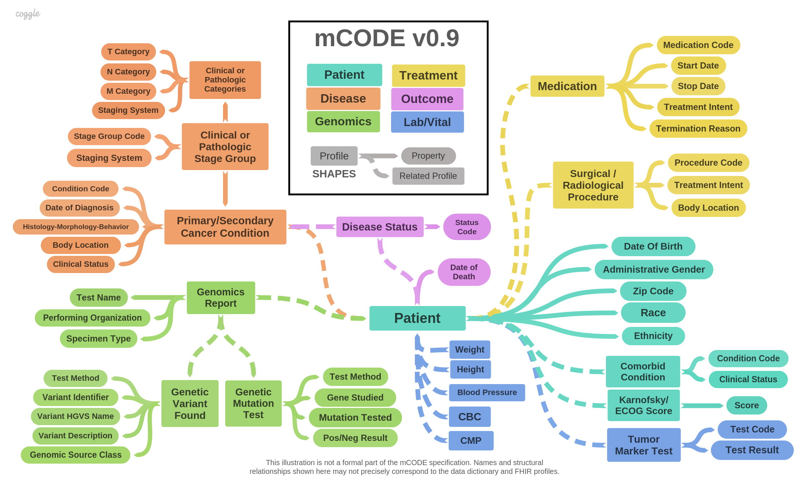

HL7 FHIR Implementation Guide: minimal Common Oncology Data Elements (mCODE), v0.9.1
Publish Box goes here
Scoping and prioritization work resulted in identification of data elements in six areas:
The results are shown in the following diagram:

Specifications consulted for the development of this IG include:
TBD.